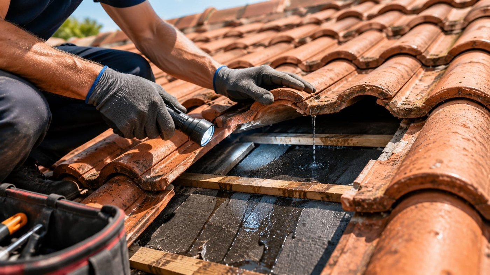
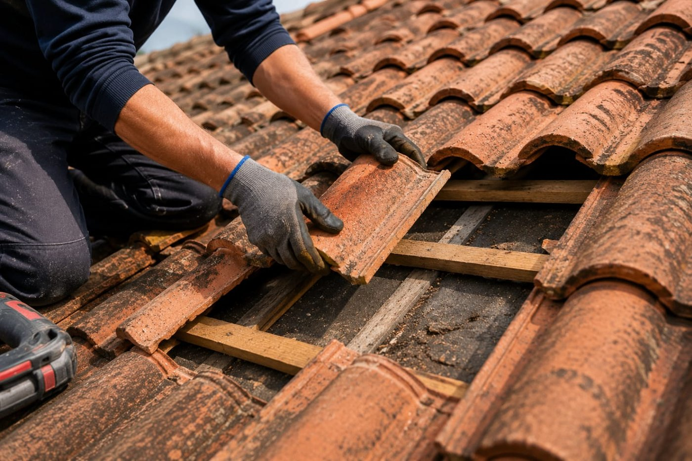
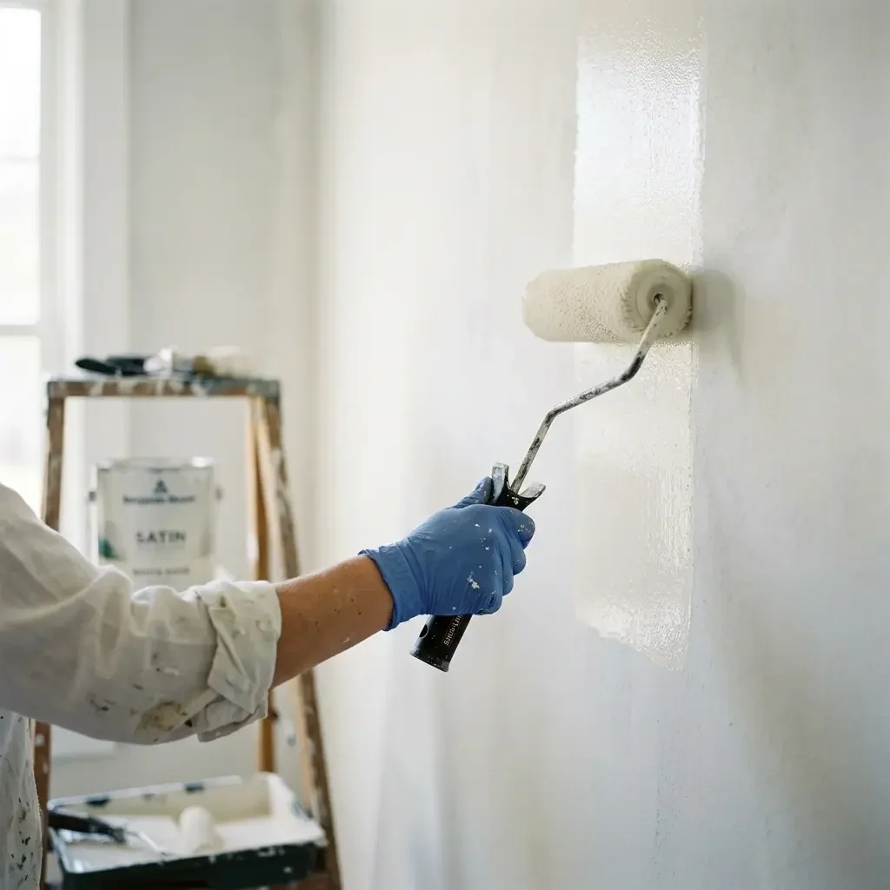

Nos prestations à Yvetot
- Rénovation et Réparation Toiture à Yvetot
- Pose de Toiture Neuve à Yvetot
- Entretien et Démoussage à Yvetot
- Peinture Intérieure à Yvetot
- Peinture Extérieure à Yvetot
- Travaux de zinguerie à Yvetot
- Nettoyage et ravalement façade à Yvetot
- Installation et remplacement de Velux à Yvetot
- Peinture de toiture à Yvetot

Rénovation et Réparation Toiture
Inspection, diagnostic précis et travaux de remise à neuf pour prolonger la vie de votre toit et assurer son étanchéité.
En savoir plus
Pose de Toiture Neuve
Installation complète de toitures traditionnelles ou modernes, avec des matériaux adaptés à vos besoins et au climat local.
En savoir plus
Entretien et Démoussage
Nettoyage professionnel, traitement préventif et entretien régulier pour préserver l'intégrité et l'esthétique de votre couverture.
En savoir plus
Peinture Intérieure
Nous réalisons tous vos travaux de peinture pour murs, plafonds et boiseries. Choix de couleurs, conseils personnalisés et finitions impeccables pour un intérieur qui vous ressemble.
En savoir plus
Peinture Extérieure
Protection et embellissement de vos façades, boiseries et ferronneries. Des produits résistants aux intempéries pour une durabilité et un esthétisme préservés.
En savoir plus
Travaux de zinguerie
Installation et réparation de gouttières, chéneaux et éléments en zinc pour une évacuation optimale des eaux pluviales et une protection accrue de votre façade.
En savoir plus
Nettoyage et ravalement façade
Redonnez un coup de jeune à vos murs extérieurs. Nous nettoyons et traitons vos façades pour une protection durable et une esthétique renouvelée.
En savoir plus
Installation et remplacement de Velux
Pose et remplacement de fenêtres de toit Velux pour apporter plus de lumière et améliorer votre confort.
En savoir plus
Peinture de toiture
Redonnez de l'éclat à votre toiture grâce à une peinture professionnelle résistante aux intempéries et aux UV.
En savoir plus